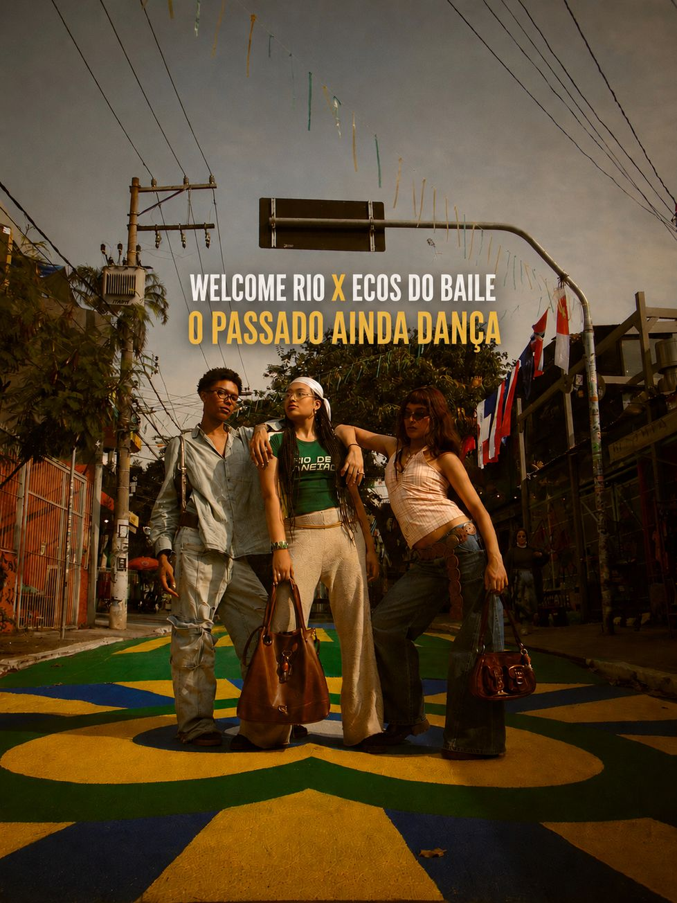
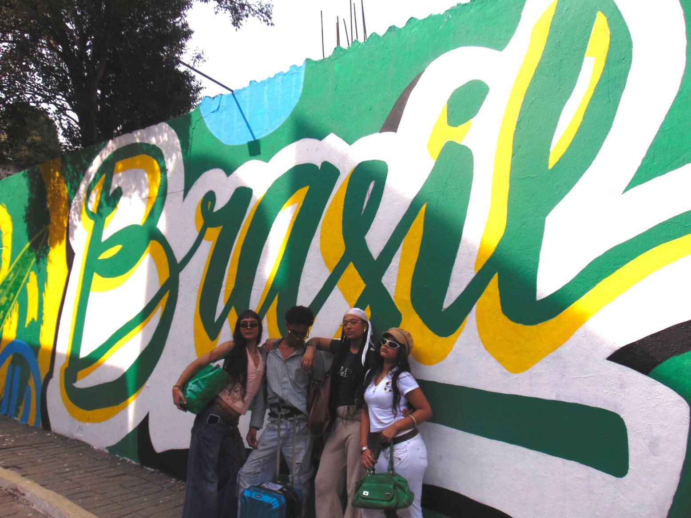
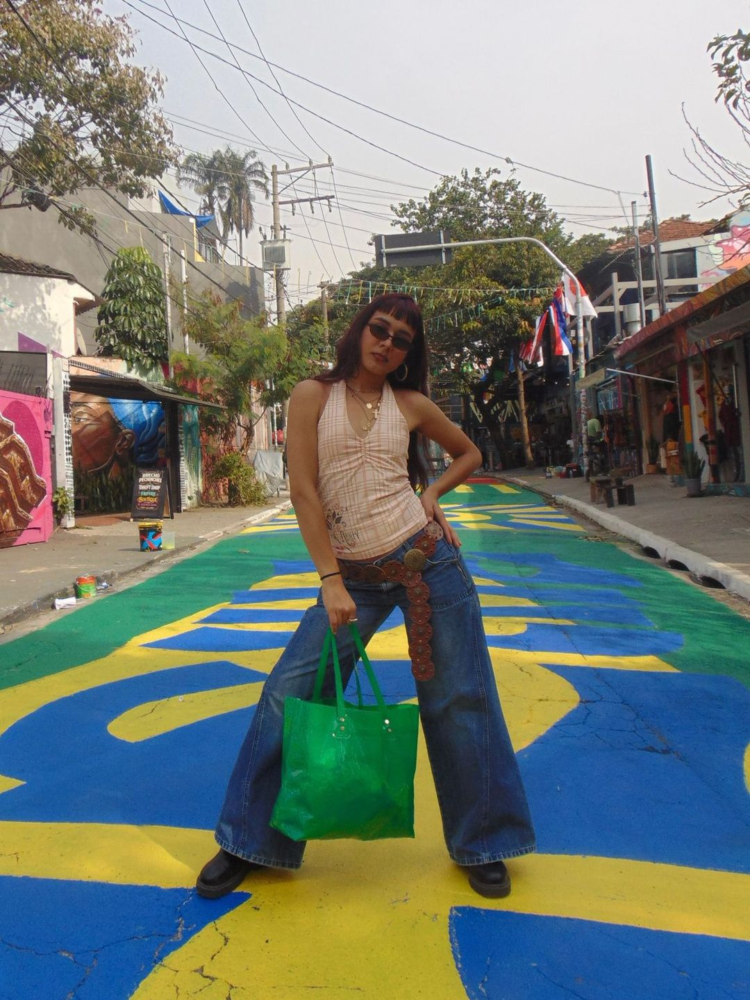
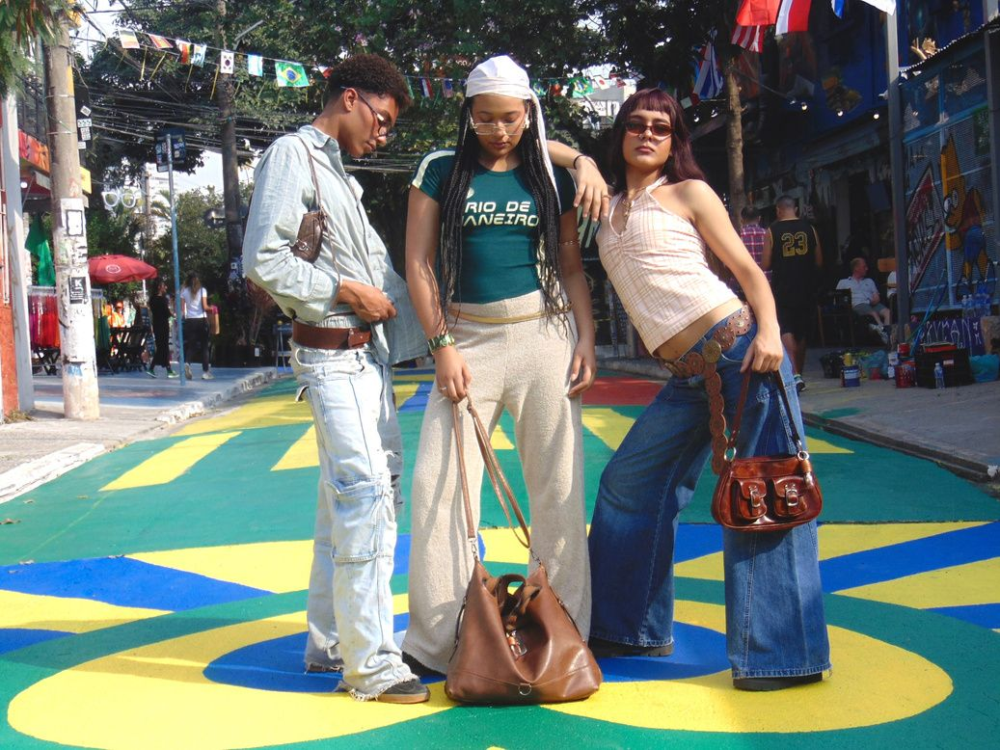
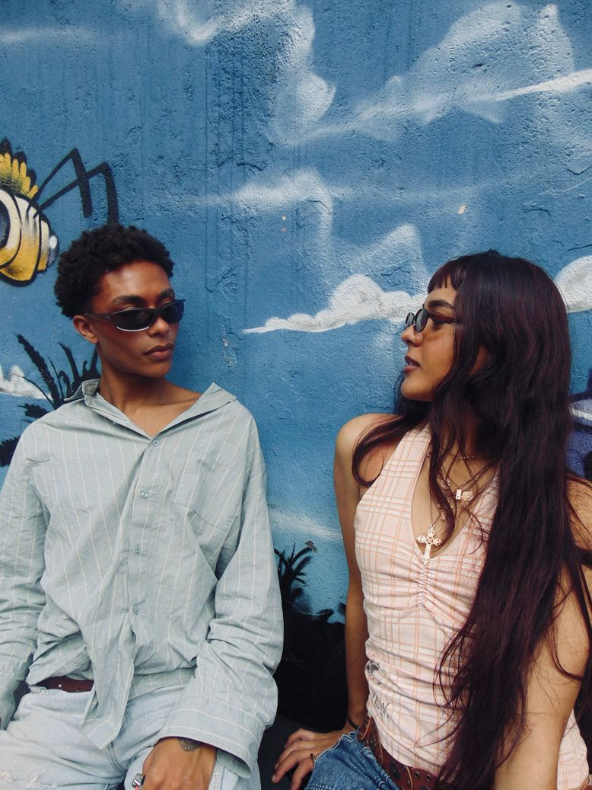
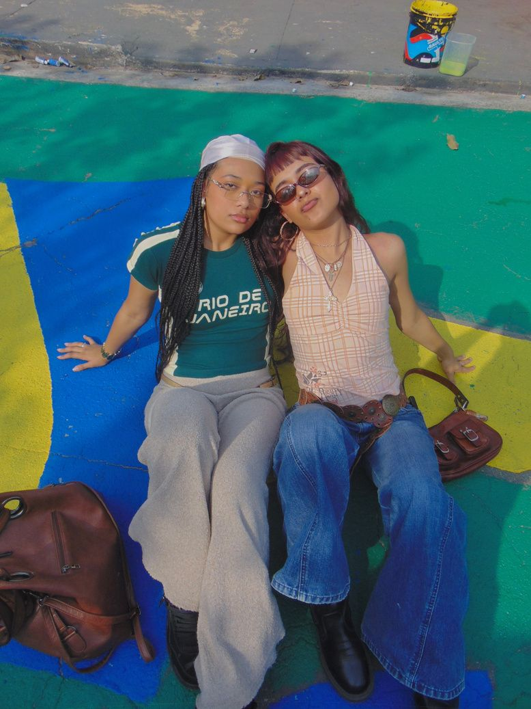
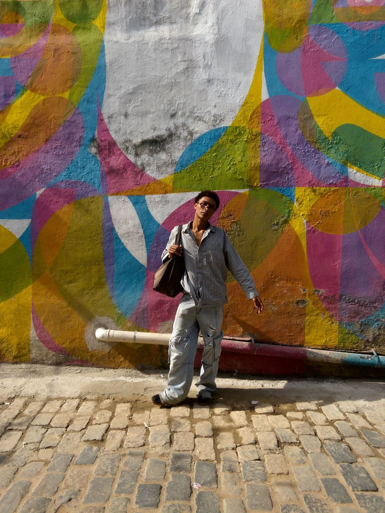
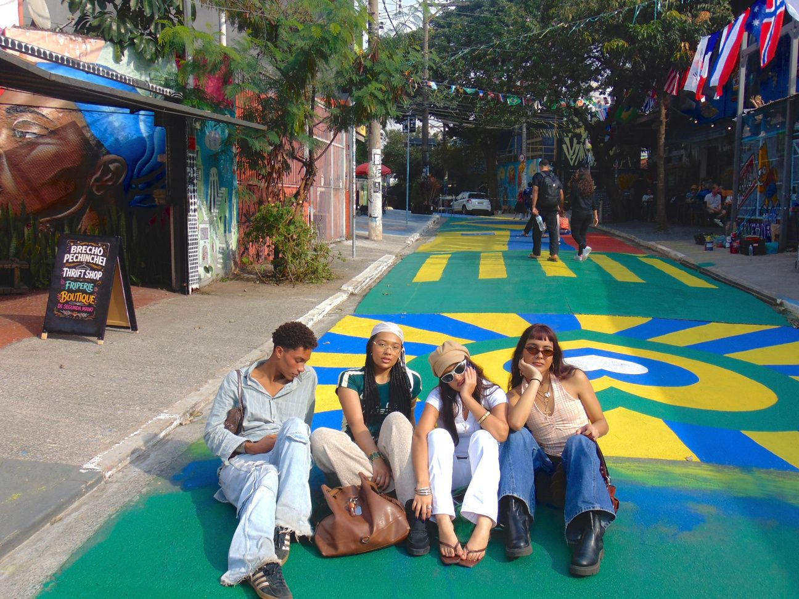

O passado
ainda dança.
Welcome Rio × Ecos do Baile. Uma campanha sobre a música que virou identidade, dos bailes black dos anos 1970 às ruas de hoje.
“Onde a música
vira identidade.”
A campanha resgata a trajetória da cultura negra do Rio de Janeiro: a soul music, os bailes black dos anos 1970, o movimento Black Power e as comunidades cariocas que construíram uma identidade visual e cultural própria.
A proposta é celebrar a música, a moda e a resistência cultural que nasceram nas pistas de dança e nas ruas, valorizando a criatividade, o orgulho da identidade negra e a força das comunidades brasileiras.







Lambe-lambes no Beco do Batman, na Vila Madalena e no centro de São Paulo, perto de faculdades, casas de show e bailes black.
Perfil @ecosdobaile.br no Instagram e no TikTok, com as roupas, os acessórios e o vídeo da campanha.
Levar a Welcome Rio para fora da bolha do Rio de Janeiro sem perder sua identidade.
Projeto Comunicar / Ana Clara Martins, Bruna Lustosa, Fernando Murachco e Gabriela Leite Bezerra / Prof.ª Priscila Rezende Carvalho